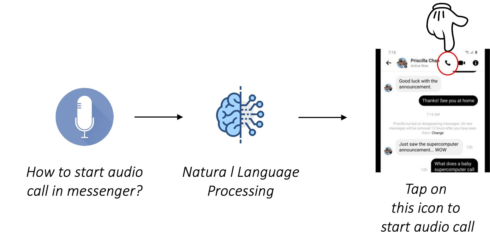
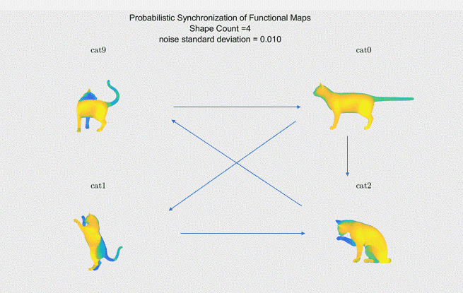
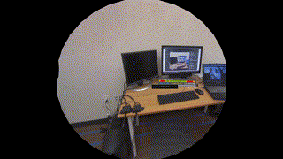
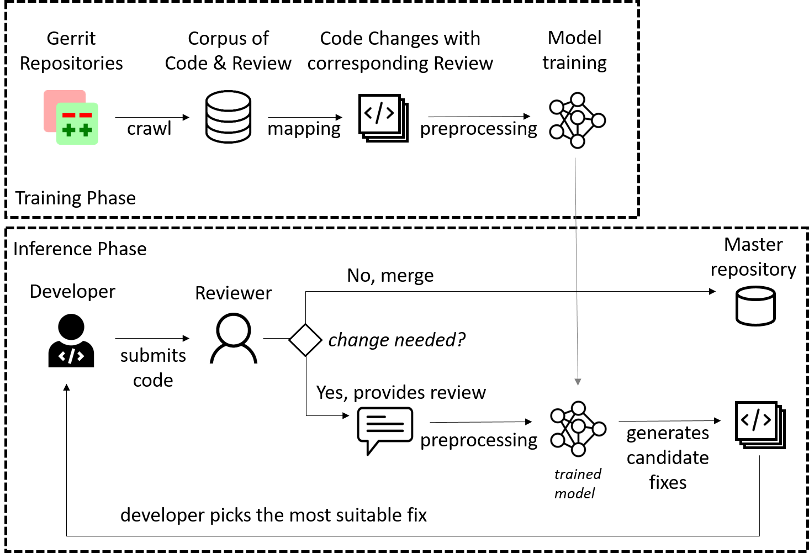
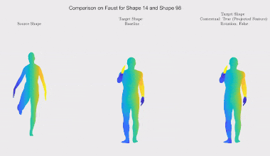
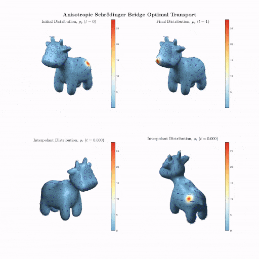
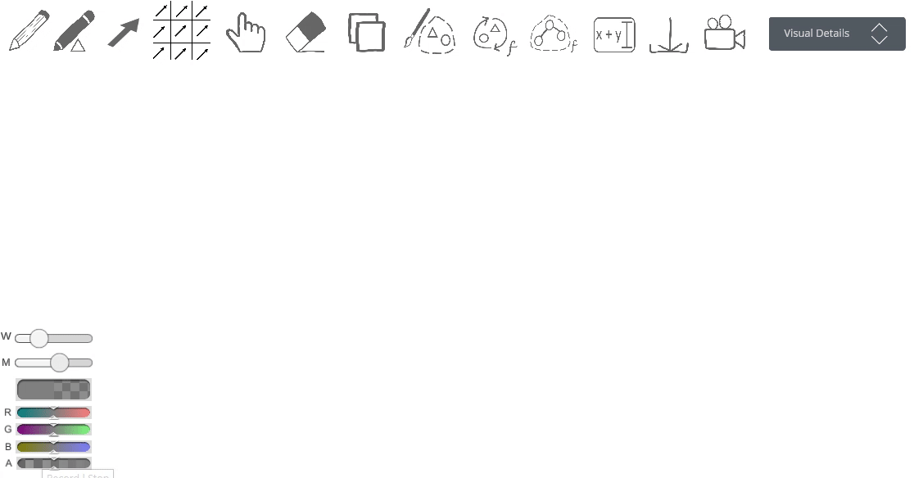
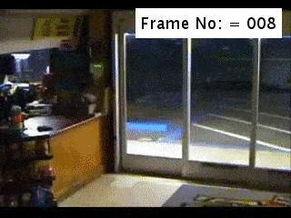

Research Topics
(click on a specific category to see relevant works)- # HCI
- # A11y
- # Deep Learning
- # Interactive System
- # Creative Toolkit
- # Image & Video Understanding
- # Natural Language Processing
- # AR / VR
- # Computer Graphics
- # Computer Vision
- ALL
- PUBLISHED
- PREPRINT
- ONGOING
- PAST PROJECTS
graphiti: Sketch-based Graph Analytics for Images and Videos
(Accepted to CHI '22, acceptance rate: 12.5%) Doi | Code | Abstract
Dr. Nazmus Saquib, Faria Huq, Dr. Syed Arefinul Haque
Keywords: Sketching Interface, Embodied Mathematics, Graph Analytics,
Computer Graphics, Computer Vision, Image Processing
Graph and network analytics are mostly performed using a combination of symbolic expressions, code, and graph visualizations.
These different representations enable graph-oriented conceptualization, analytics, and presentation of relationships in networks.
While many visualization designs are implemented for visual understanding of graphs, they tend to be designed for custom
applications, and do not facilitate graph algebra. We define a design space of general graph analytics by summarizing
the commonly used graphical representations (graphs, simplicial complexes, and hypergraphs) and graph operations,
and map these elements to three brushes and some direct manipulation techniques.

Using LLM to Rank Web elements based on User Intent
Summary
Faria Huq, Jeff Bigham, Nikolas Martelaro
Keywords: Accessibility, Web Interface, LLM
We investigate how LLMs perform in ranking relevant elements in a webpage for a user given tasks. We quantify the accuracy of LLM across a range of task difficulties and the level of detail provided in task descriptions. To ensure the relevance and practicality of our study, we collect a small-scale dataset that represents real-world tasks commonly encountered in everyday use.

Riemannian Functional Map Synchronization for Probabilistic Partial Correspondence in Shape Networks
Preprint | Blog | Abstract
Faria Huq
, Adrish Dey, Sahra Yusuf,
Dr. Dena Bazazian, Dr. Tolga Birdal, Prof. Nina Miolane
Keywords: Riemannian Geometry, Shape Correspondence,
Computer Graphics, Geometry Processing
This project is about probabilistic correspondence synchronization, a state of the art technique in multi-way matching of a collection
of 3D shapes usually represented as nodes in a graph.
In particular, we will model correspondences via functional maps and build upon the prior work on permutation synchronization

Chameleon User Interface
Abstract
Faria Huq, Z, Ron, Rita, Prof. David Lindlbauer
Keywords: Mixed Reality, Geometry Processing
Expected date of completion: February, 2022
Mixed Reality enables virtual interfaces to be placed at arbitrary locations in users’
environments, and with nearly arbitrary appearance. This can lead to challenges in designing
user interfaces for Mixed Reality. On the one hand, if all user interface elements are shown to users,
MR systems become hard to use because of visual clutter. On the other hand, if virtual interface elements
are hidden, users have to constantly access them through menus and other cumbersome interactions.
The goal of this project is to develop an approach that enables virtual interface elements to be
constantly visible without introducing visual clutter and distraction. This is achieved by adapting
the appearance of virtual interface elements based on their surrounding space. If a virtual interface
element is placed next to a couch with round edges and colorful fabric, the interface elements should adapt
a comparable appearance. That way, the interface element blends into the environment, but remains visible and
accessible for users.

Review4Repair: Code Review Aided Automatic Program Repairing
(Published in Information and Software Technology) Doi | Abstract
Faria Huq, Masum Hasan, Mahim Anzum Haque Pantho, Sazan Mahbub,
Prof. Anindya Iqbal, Toufique Ahmed
Keywords: Automatic Program Repair, Natural Language Processing
The natural language instructions scripted on the review comments are
enormous sources of information about code bug’s nature and expected solutions.
In this study, we investigate the performance improvement of repair techniques using code review comments.
We train a sequence-to-sequence model on 55,060 code reviews and
associated code changes. We also introduce new tokenization and preprocessing approaches
that help to achieve significant improvement over state-of-the-art
learning-based repair techniques. We boost the top-1 accuracy by 20.33% and top-10 accuracy by 34.82%.
We could provide a suggestion for stylistics and non-code errors unaddressed by
prior techniques.
Static and Animated 3D Scene Generation from Free-form Text Descriptions
Faria Huq, Prof. Anindya Iqbal, Nafees Ahmed
Keywords: Natural Language Processing, Computer Graphics
Generating coherent and useful image/video scenes from a free-form textual description is technically a
very difficult problem to handle. Textual description of the same scene can vary greatly from person to person,
or sometimes even for the same person from time to time. As the choice of words and syntax vary while preparing a
textual description, it is challenging for the system to reliably produce a consistently desirable output from
different forms of language input. In our work, we study
a new pipeline that aims to generate static as well as animated 3D scenes from different types of free-form textual
scene description without any major restriction. Our work shows a proof
of concept of one approach towards solving the problem, and we believe with enough training data, the same pipeline can
be expanded to handle even broader set of 3D scene generation problems.

A Tale on Abuse and Its Detection over Online Platforms, Especially over Emails: From the Context of Bangladesh
(Accepted in NSysS' 21, acceptance rate: 16.67%)
Best Paper Award |
Code |
Abstract
Ishita Haque, Rudaiba Adnin, Sadia Afroz, Faria Huq, Sazan Mahbub, Prof. A. B. M. Alim Al Islam
Keywords: Interactive System, Natural Language Processing
With the rise of interactive online platforms, online abuse is becoming more and more prevalent. To gain rich insights
on the user’s experience with abusive behaviors over emailing and other online platforms,
we conducted a semi-structured interview with our participants. Through our user studies, we confirm a noteworthy
demand to explore abuse detection over emails. Here, we
reveal a clear preference from the users for an automated abuse detection system over a human-moderator based
system. These findings, along with the existing limited effort for abusive behavior detection and prevention
systems for emails inspire us to design and build "Citadel", which is a fully automated abuse detection system in
the form of a Chrome extension.

Self-similarity loss for shape descriptor learning in correspondence problems
Short Description
Faria Huq, Kinjal Parikh, Lucas Valenca, Dr. Tal Shnitzer-Dery
Expected date of completion: February, 2022
Keywords: Deep Learning, Self-supervised Learning
Recent work on shape correspondence using functional maps developed several unsupervised frameworks
for learning better shape descriptors for correspondence. One of the challenges in such shape
correspondence tasks stems from symmetric ambiguity, where different shape regions are represented
similarly due to symmetry and are therefore wrongly matched. In an attempt to address this challenge,
we will explore the use of a recently introduced contextual loss function.

Anisotropic Schrödinger Bridges
AbstractShort Description
Faria Huq, Jonathan Mousley, Juan Atehortúa, Adrish Dey, Prof. Justin Solomon
Expected date of completion: February, 2022
Keywords: Optimal Transport, Anisotropic Diffusion, Schrödinger Bridges
In this project, we mplemented a discrete Schrödinger bridge model for anisotropic heat diffusion, biasing it to move along different paths on the surface, targeting
applications in geometry processing. Currently, we are trying to optimize for the anisotropy
of our operator to add constraints on the transport problem.

Embodied Vector Algebra
Faria Huq, Dr. Nazmus Saquib
Expected date of completion: May, 2022
Keywords: Sketching Interface, Embodied Mathematics, Vector Analytics, Computer Graphics
This is a work in progress. So far we have developed the basic interactions for drawing and modifying vectors.
Currently we are working on the implementation of basic vector functions.
Novel View Synthesis from blurred image
Faria Huq, Prof. Anindya Iqbal, Nafees Ahmed
Expected date of completion: March, 2022
Keywords: Neural Rendering, View Synthesis, Image Deblurring
We aim to synthesize a target image with an arbitrary target camera pose (novel view synthesis) from given a source
image of a dynamic scene containing motion blur and its camera pose.
Our key insight is to utilize neural rendering to jointly remove motion blur artifact using
deblurring technique and synthesize novel views from high-dimensional spatial feature vectors.
We are using Stereo Blur Dataset for our experimental analysis.

Real-world Anomaly Detection in Surveillance Videos by Analyzing Human Pose and Motion
Abstract